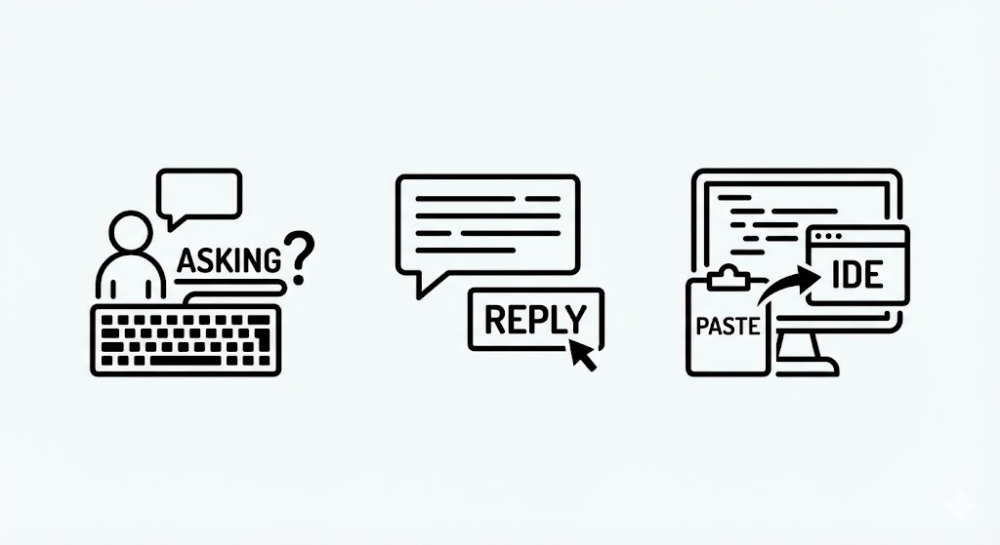
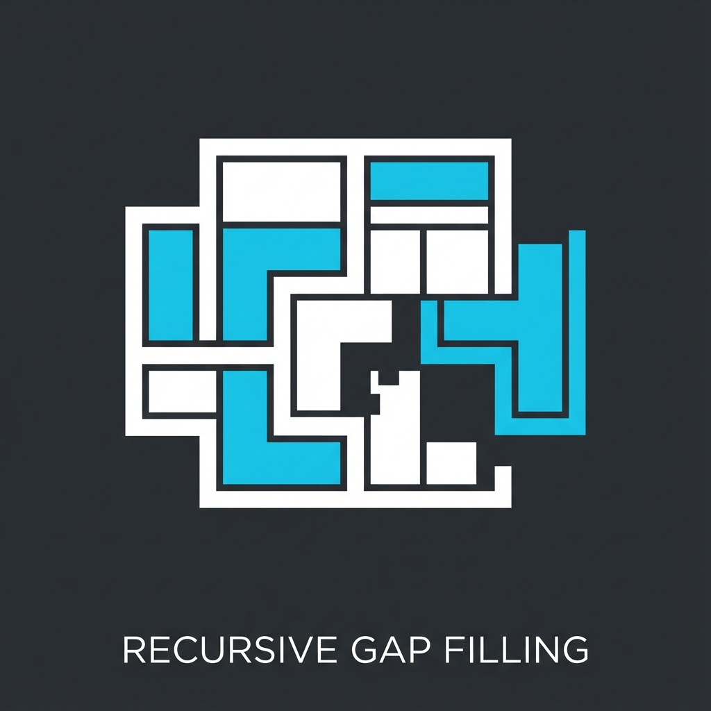
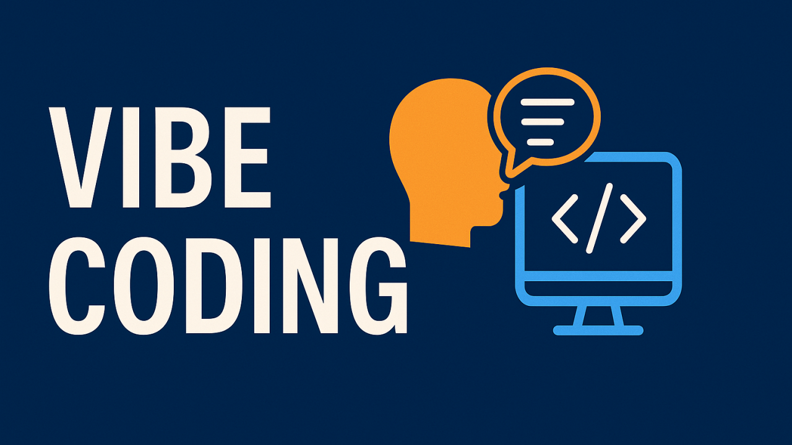
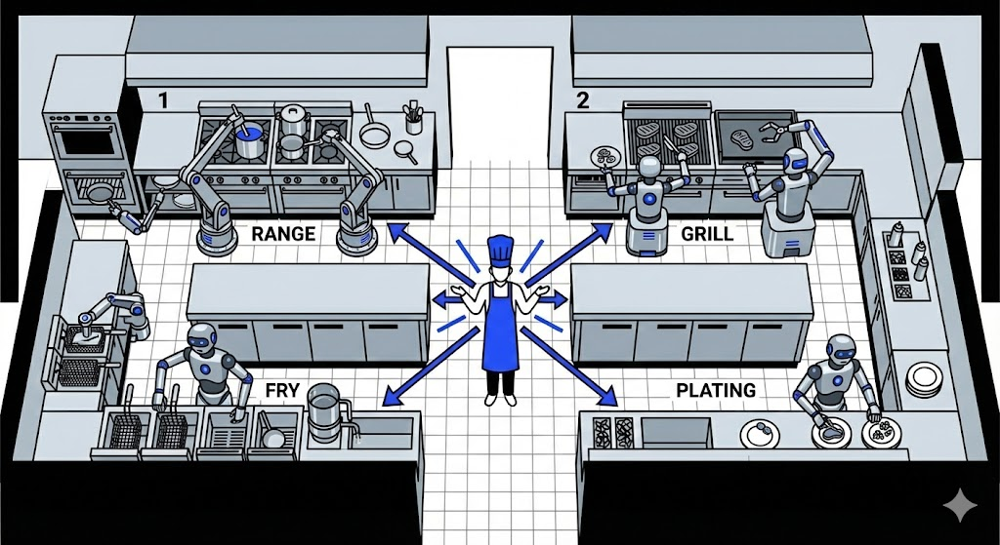
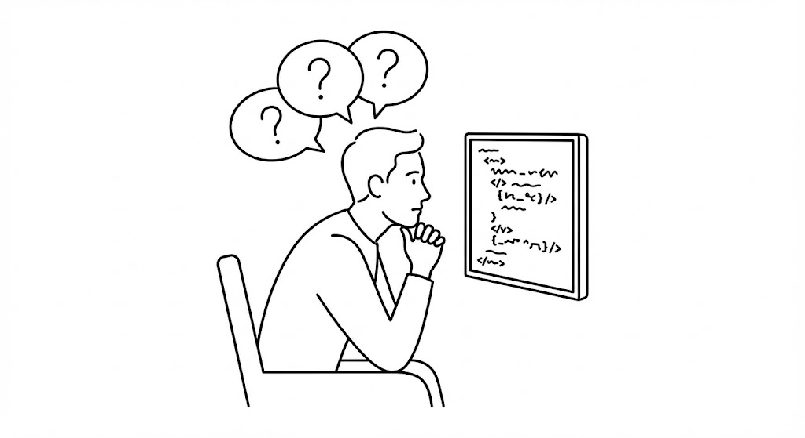
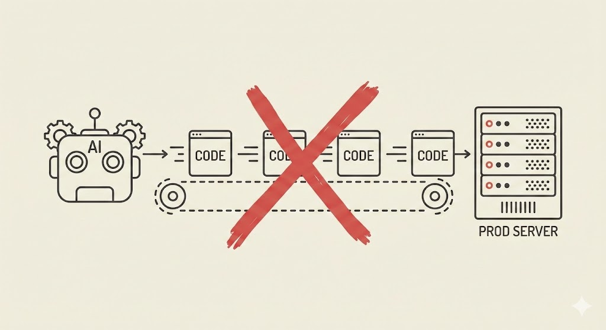
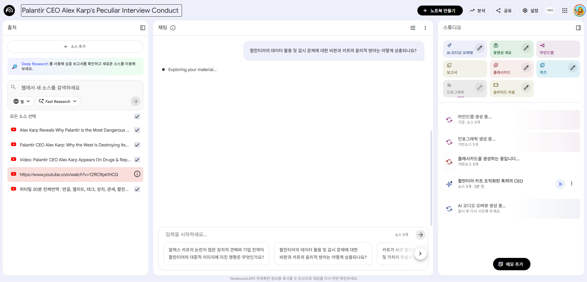

AI 페어프로그래밍
Day 1: 마인드셋 & 첫 경험
김학민 · SE P/J · 2025.12
들어가며
AI 전문가도 아니고,
취미로 남들보다 조금 먼저 시작했고
관심이 있어서 이것저것 먼저 해보고
경험해본 사람 정도로 생각해주시면 좋겠습니다
오늘의 목표
"AI가 이 정도까지 해준다"를 경험하기
두려움 없이 막 물어보는 습관 만들기
마스터셰프 마인드 장착하기

AI를 지휘하는 마스터셰프의 마인드셋
"현재 모델의 성능을
100% 사용하는 사람은 거의 없다"
— 많은 AI 전문가들의 공통된 의견
우리 대부분이 AI를 쓰는 수준
지금 우리가 AI 쓰는 법
질문 → 답변 → 복붙 → 끝
이건 AI를 검색 엔진으로 쓰는 것
밖에서는 어떻게 일하나
2025년 현재, AI 코딩 도구는
필수 도구가 되어가고 있습니다
스타트업, 빅테크 할 것 없이
대부분의 개발자가 AI 도구를 일상적으로 사용
챗봇 시대 → Agent 시대
Before
질문 → 답변
After
작업 위임 → 실행 → 검증
한 번의 주고받기가 아니라
AI가 알아서 수행하고 보고
Agent 시대의 업무 방식
내가 코드 한 줄 안 쳐도 작업이 완료됨
Recursive Gap Filling
재귀적 틈새 메우기
- 실제 문제를 먼저 접한다
- AI에게 해결 방법을 묻고 코드를 생성한다
- 이해 안 되면 "12살에게 설명하듯이" 다시 묻는다
- 반복하다 보면 전체 구조가 보인다
최근 화제가 된 인터뷰
고등학교 중퇴 후 ChatGPT로 머신러닝을 독학해
박사급이 즐비한 OpenAI 연구원이 된 사람
가브리엘 피터슨 (Gabriel Petersson)
기사 읽어보기 ↗
"AI에게 반복 질문하며 지식을 쌓다 보니
어느 순간 전체 구조가 보이기 시작했다."
"12살에게 설명하듯이"
이해가 안 되면 계속 파고들기
"좀 더 쉽게 설명해줘"
"예시를 들어줘"
"왜 그렇게 되는 거야?"
질문을
두려워하지 마세요
멍청한 질문은 없습니다
AI는 절대 당신을 판단하지 않습니다
Vibe Coding
Andrej Karpathy (2025.02)
"코드가 존재한다는 것 자체를 잊어버리는 코딩"
"바이브코딩"이라는 말이
사라지고 있다
왜냐하면 이젠
코딩이 그냥 바이브코딩이니까
마인드셋 전환
AI 시대, 개발자의 새로운 역할
고민을
아웃소싱하세요
"이 문제 어떻게 풀지?" 혼자 고민 ✗
"같이 생각해보자" AI에게 던지기 ✓
마스터셰프가 되어라
직접 모든 요리를 하지 않는다 · 각 스테이션을 지휘한다
품질을 책임진다 · 마지막 터치는 직접
마스터셰프의 역할
- 전체 방향 설정 — 무엇을 만들지 결정
- 품질 관리 — 결과물을 검수하고 피드백
- 리소스 분배 — 어떤 AI에게 어떤 작업을
- 최종 책임 — 마지막 터치는 직접
"일"의 정의가 바뀐다
예전
문제 → 직접 해결
지금
찾기 + 전달 + 검증
코드 치는 시간 ↓
문제 정의 + 검증 시간 ↑
Tool 사용법도 중요하지만
또 그렇게 중요하진 않습니다
원리를 이해하면 모든 도구가 같은 형식임을 알 수 있고
더 좋은 도구가 계속 나오기 때문에
매번 새로 학습한다는 마인드가
필요합니다
Model × Harness × Pilot
AI 페어프로그래밍의 세 가지 요소
Model
어떤 LLM을 사용하느냐
| Model | SWE-bench | Note |
|---|---|---|
| Claude Opus 4.5 | 80.9% | 코딩 최강 |
| GPT-5.1-Codex-Max | 77.9% | 24시간 자율 |
| Claude Sonnet 4.5 | 77.2% | 가성비 |
순위에 집착 ✗ · 어차피 매주 바뀜
Agentic Harness
Model을 둘러싼 도구와 환경
Agent
Cursor, Claude Code, Cline
Tools
파일, 웹, API, 터미널
Context
CLAUDE.md, .cursorrules
Harness는 가볍게
MCP 좋다고 이것저것 등록하면
오히려 AI가 헤맵니다
Tool이 적을수록 Model이 집중
Model이 똑똑해질수록 Harness는 가벼워져야 함
Pilot
가장 중요한 요소 = 당신
Pilot의 핵심 역량
- 문제 분해 — 복잡한 문제를 AI가 처리 가능한 단위로
- 실패 패턴 인식 — 할루시네이션, 컨텍스트 한계 예측
- 도메인 지식 — AI 출력의 적절성을 즉시 판단
- 파이프라인 설계 — 반복 가능한 워크플로우 구축
문제 분해 예시
Bad
"이커머스 사이트
만들어줘"
Good
1단계: 상품 목록
2단계: 상세 페이지
3단계: 장바구니
각 단계 검증 후 진행
세 가지가 맞으면
Model이 좋아지든, Harness가 발전하든
여러분에게는 생산성 향상밖에
일어나지 않습니다
도구 소개
2025년 12월 기준 AI 코딩 도구 지형도
Claude Code
Anthropic 공식 CLI
터미널 기반 Agent
Cursor
VS Code 포크
가장 대중적인 선택
Antigravity
Google의 신무기
Gemini 3 Pro 기반
개인적인 의견
다 써봤지만 결국 Claude Code만한 게 없었습니다.
기왕 몇만원 더 쓸 거면 제일 좋은 거 쓰고 싶다면
→ Claude Code가 나은 선택
하지만 Cursor는 항상 옳은 선택
- 최선단 업체 — AI IDE 분야 선두 주자
- Agent 기능 탑급 — 멀티파일 수정, 커맨드 실행
- 낮은 학습 곡선 — VS Code와 동일한 UI
- 합리적 가격 — Pro $20, Pro Plus $60
익숙한 환경에서 시작하고 싶다면 Cursor
Antigravity의 현재
Google이 작정하고 무료로 풀었음
Gemini 3 Pro 기반, 한도도 넉넉
현재 기준으로는 Cursor 쓸 이유가 없긴 함
단, "무료는 지금뿐"일 수 있음 — Preview 단계
도구 선택 가이드
| 상황 | 추천 |
|---|---|
| 최고 성능, 비용 무관 | Claude Code (Max $100) |
| 안정적, 익숙한 환경 | Cursor (Pro $20~60) |
| 무료로 시작하고 싶다 | Antigravity (무료) |
Claude Code
SWE-bench 80.9% — 역대 최고 기록
Opus 4.5 기반, 터미널에서 동작하는 Agent
Claude Code 요금제
| 플랜 | 가격 | 특징 |
|---|---|---|
| Pro | $20/월 | 한도 부족 — 실사용 어려움 |
| Max 5x | $100/월 | Opus 4.5 풀 액세스, 실무용 |
| Max 20x | $200/월 | 무제한급, 파워유저용 |
$20 Pro는 제한이 너무 작아서 Claude Code 제대로 못 씀
최소 $100 Max부터 시작해야 의미 있음
Claude Code 설치
Max 요금제 구독 후 로그인하면 바로 사용 가능
사전 설치 (필수)
| 도구 | 용도 | 설치 |
|---|---|---|
| Node.js 18+ | Claude Code 실행 | nodejs.org |
| Python 3.10+ | 스크립트, MCP | python.org |
| Git | 버전 관리 | git-scm.com |
| Cursor | AI IDE (Pro $20) | cursor.sh |
Cursor 핵심 단축키
Cmd+K
코드 생성/수정
Cmd+L
채팅 열기
Cmd+I
Composer
(멀티파일)
@파일명
컨텍스트 추가
첫 경험 실습
직접 해봐야 감이 옵니다
첫 대화 시작하기
"이 함수 설명해줘"
코드를 읽어주고 분석해줍니다
"좀 더 쉽게 설명해줘"
모르는 것 계속 파고들기
한 질문이 다음 질문으로 이어집니다
Agent 맛보기
"시켜놓고 지켜보기"의 진정한 맛
"분석하고 테스트 추가해줘"
시켜놓고 지켜보기
AI 작업 중 (2-3분) 관찰하면서 질문하기
"왜 이 파일을 먼저?" "왜 여기서 막혔지?"
관찰할 것들
- 어떤 파일을 먼저 읽는가 — AI의 탐색 전략
- 어디서 헤매는가 — 컨텍스트 부족 신호
- 어떤 명령을 실행하는가 — 작업 방식 이해
- 실패했을 때 어떻게 복구하는가 — 에러 핸들링
실습: littlefs 탐색
결과 검토하기
주의사항
AI를 쓸 때 반드시 알아야 할 것들
AI Slop 주의
AI 생성 코드를 검증 없이 그대로 쓰는 것
"입으로 코딩하면 되겠네?" 하고 덤볐던 사람들
결국 아무것도 완성 못함
도메인 지식 없이는 검증도, 방향 설정도 불가능
실제 사례 (2025.05)
Lovable에서 생성된 1,645개 웹앱 중
170개에서 개인정보 유출 취약점 발견
마지막 터치는 여러분이 해야 합니다
코드는 부채다
자산이 아닙니다
유지보수 부담, 버그, 기술 부채
필요한 최소한의 코드만 유지
보안 주의사항
- API 키 — 절대 코드에 하드코딩 금지
- 민감 데이터 — 고객 정보, 내부 키 프롬프트 금지
- .gitignore — .env, 키 파일 제외 확인
- 코드 리뷰 — AI 생성 코드도 반드시 검토
AI는 코드보다
문서를 더 잘 만든다
발표 자료, 기술 문서, 보고서, 스프레드시트
"HTML로 멋진 문서 만들어줘" → 기가 막히게
Google NotebookLM
문서 업로드 → 팟캐스트 형식 오디오북 자동 생성
PPT, 논문, 기술 문서 → 출퇴근길에 듣기
여유가 생겼다면
병렬로 돌리세요
"집에서 코딩한다" = 열정적인 개발자?
실상은 게임 오토모드 돌리듯
AI 수행시키고 유튜브 보다가 결과만 확인
Day 1 핵심 정리
- 고민을 아웃소싱 — 생각 자체를 AI와 나누기
- 마스터셰프가 되세요 — 직접 요리 ✗, 주방 지휘 ✓
- Tool보다 원리 — 도구는 계속 바뀝니다
- Model × Harness × Pilot — 세 요소의 균형
- 마지막 터치는 직접 — AI Slop 금지
"코딩 잘하는 사람"이
아니라
"무엇을 만들어야
하는지 아는 사람"이
이깁니다
내일 예습
- CLAUDE.md — 프로젝트 맥락 파일
- Context Engineering — 맥락 설계의 중요성
- 파이프라인 설계 — 반복 가능한 워크플로우
- TDD 실습 — AI와 함께하는 테스트 주도 개발
오늘의 과제
- ☐ Claude Code 설치 및 로그인 확인
- ☐ littlefs 또는 연습용 프로젝트 클론
- ☐ "이 프로젝트 설명해줘" 요청해보기
- ☐ 간단한 수정 요청하고 결과 검토하기
Q&A
감사합니다
김학민 · SE P/J